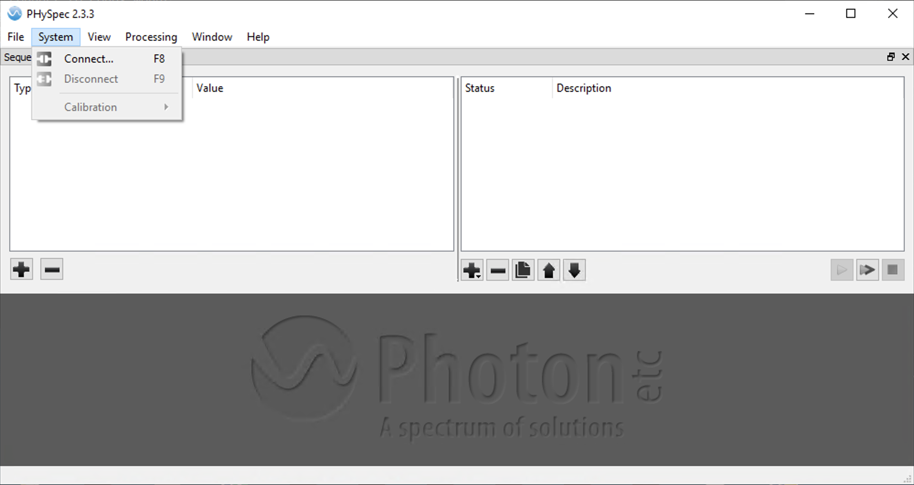
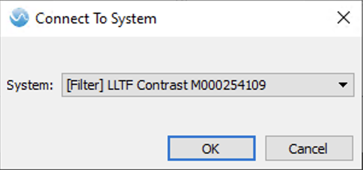
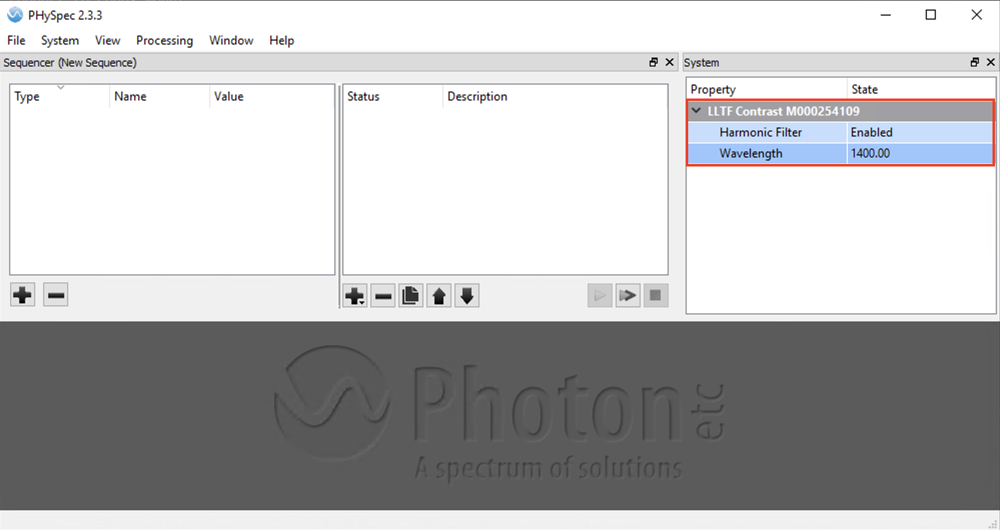

Coronagraph Alignment
Focal plane mask aligment
The best way to align the coronagraphs, currently, is manually using the VAMPIRES camera viewers. The process will be the same for each mask and we recommend aligning all masks to the internal source before going on-sky.
Start by inserting one of the masks using the VCAM1 or VCAM2 camera viewer–
CTRL + 8 CLC-2
CTRL + 9 CLC-3
CTRL + 0 CLC-5
CTRL + - CLC-7
CTRL + = DGVVC
To move the coronagraph, use CTRL + <ARROW> for small steps, and SHIFT + <ARROW> for large steps. When satisfied, press CTRL + s to save the current position.
Lyot stop alignment
It is best to align the Lyot stop with vpupcam- the viewer has built-in keyboard shortcuts for roughly and finely adjusting x, y, and theta of the mask wheel.
sonne $ vpupcam &
To insert the stops, use
CTRL + 9 LyotStop-L
CTRL + SHIFT + LyotStop-S
CTRL + SHIFT + 0 LyotStop-M
and then use CTRL + <ARROW> for fine alignment (or SHIFT + <ARROW> for coarse alignment). The wheel can be rotated with CTRL + [/CTRL + ] (or with SHIFT for coarse changes). Press CTRL + s to save the current position to the mount configuration for the selected mask.
(Advanced) Focusing
Advanced
The coronagraphs should not need refocusing, often. Only proceed with focusing the masks if necessary.
The fieldstop stage can move along the focus axis with
sonne $ vampires_fieldstop f
The focus can also be adjusted in the camera viewers with CTRL + , and CTRL + . (comma and period).
The fieldstop optic as well as the four classic-Lyot coronagraph (CLC) masks all should have the same focus position. These optics are all implemented as amplitude masks on the first surface of an optical window. The dgVVC mask has multiple layers and the optimal focus position is not the same as the CLC masks.
Autofocusing
The fieldstop and CLC masks can be autofocused off-sky by optimizing the sharpness of the masks. This is best done using a flat lamp. It is easier to use the SCExAO integrating sphere source as a flat lamp than the NasIR calibration lamp. To set this up, first prepare the SCExAO bench by removing the source fiber and placing the integrating sphere in
sc2 $ src_fib out &
sc2 $ intsphere
Now, on the CHARIS computer turn the laser source on
mrclean $ charis laser enable
mrclean $ charis laser power=100
Lastly, make sure the tunable filter is set so that the first harmonic is in the VAMPIRES passband. The filter is controlled with the nuller NUC computer and requires Microsoft Remote Desktop protocol to connect. Once connected, launch “PHySpec” and connect the LLTF device
 
Once connected, make sure the filter is tuned to twice the desired wavelength in VAMPIRES, e.g. 1400 nm will produce a harmonic at 700 nm.

At this point you should see light in VAMPIRES. If not, see if there is light on the infrared bench and if so then check the VAMPIRES instrument status and increase exposure time or switch to slow readout mode. Slow readout mode at max framerate is usually sufficient for flat fields.
Now, insert one of the CLC masks- the CLC-7 mask has the largest dot so it is easier to see.
sonne $ vampires_fieldstop clc-7
now, run the following autofocus script, specifying which camera to use for measuring the sharpness metric:
sonne $ autofocus_fieldstop -c 1
Record the output- if unsatisfactory run again with a different starting position close to the expected focus position.
There is currently no easy way to save the focus value to multiple fieldstop configurations at once, so we recommend to directly edit ~/src/device_control/conf/vampires/conf_vampires_fieldstop.toml directly and overwrite the f= XX values in the configurations for the
Fieldstop
CLC-2
CLC-3
CLC-5
CLC-7